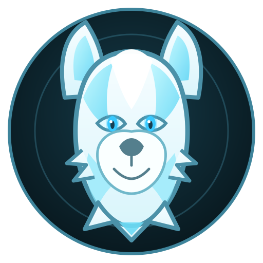

CODA CONTROL CENTER
Ready when you are.
CML checking…BASE PACK checking…Minecraft 26.4 Snapshot 30 mods
Howling Whispers Minecraft
CodaLauncher keeps the required game components current automatically.

Codaclipboard onlineFROM CODA'S DESK
News
CODA'S MOD DRAWER
Mods
Filed, checked, and ready to cause entirely responsible adventures.CML mod shelfCoda reads these directly from your managed Minecraft installation.
CODA'S PACK SHELF
Packs
Complete Howling Whispers experiencesCoda keeps their mods, resources, music, configs and world content together.
1 PACK
CODA'S ART CABINET
Resourcepacks
Visuals, music, menus, and presentationRequired resources follow their Packs automatically. Coda handles the paperwork.
1 RESOURCEPACK
CML IDENTITY
Your profile
One Howling Whispers identity, wherever CML takes you.CODA'S CLIPBOARD
Settings
The useful knobs. Coda keeps the dangerous-looking ones out of your way.Managed installCoda keeps Minecraft, CodaLoader, required Packs, and Resourcepacks current before the world opens.
CODA'S PAPER TRAIL
Logs
Something acting strange? This is where Coda leaves the paperwork.Nothing interesting has happened yet.